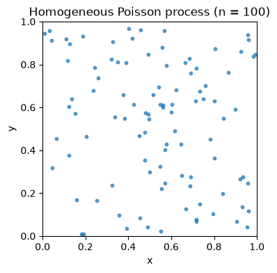
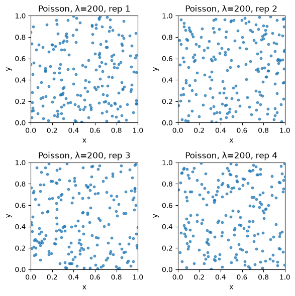
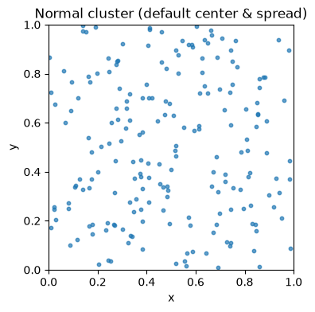
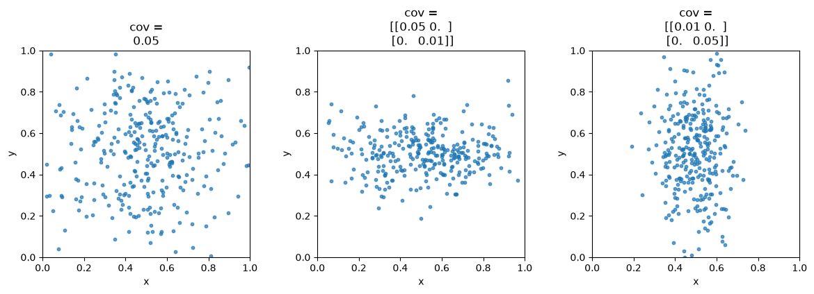
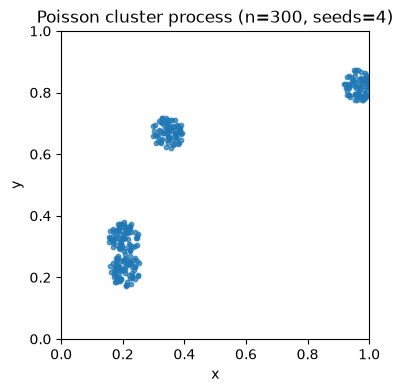
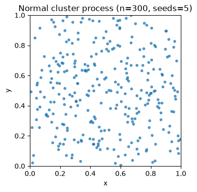

Simulating random point patterns with pointpats.random¶
This notebook illustrates how to use the pointpats.random module to simulate
random point patterns inside a study region (the hull).
We will look at several families of random patterns:
Homogeneous Poisson (
random.poisson)Normal cluster (
random.normal)Poisson cluster (Neyman–Scott) (
random.cluster_poisson)Normal cluster with random seeds (
random.cluster_normal)
All examples use a simple square window as the hull:
import matplotlib.pyplot as plt
import numpy as np
from pointpats import random as ppr # pointpats.random
# Make results reproducible
np.random.seed(12345)
# Define a simple square hull as a bounding box:
# [xmin, ymin, xmax, ymax]
hull = np.array([0.0, 0.0, 1.0, 1.0])
hull
array([0., 0., 1., 1.])
Helper function for plotting point patterns¶
We’ll use a small helper to visualize realizations of the random point processes.
def plot_pattern(points, hull, ax=None, title=None):
"""Plot a 2D point pattern inside a rectangular hull.
Parameters
----------
points : array-like, shape (n_points, 2)
Coordinates of the points.
hull : array-like, shape (4,)
Bounding box [xmin, ymin, xmax, ymax].
ax : matplotlib.axes.Axes, optional
Axis to plot on.
title : str, optional
Title for the plot.
"""
points = np.asarray(points)
if ax is None:
fig, ax = plt.subplots(figsize=(4, 4))
xmin, ymin, xmax, ymax = hull
ax.scatter(points[:, 0], points[:, 1], s=10, alpha=0.7)
ax.set_xlim(xmin, xmax)
ax.set_ylim(ymin, ymax)
ax.set_aspect("equal", adjustable="box")
ax.set_xlabel("x")
ax.set_ylabel("y")
if title:
ax.set_title(title)
return ax
1. Homogeneous Poisson process (random.poisson)¶
The homogeneous Poisson point process is the canonical model of complete spatial randomness (CSR):
Each point is independently and uniformly distributed in the hull.
The expected number of points is controlled by the intensity (points per unit area).
A typical interface (check the installed pointpats version for details) allows usage patterns like:
poisson(hull, size=n)— simulatenpoints once.poisson(hull, intensity=lambda_, size=r)— drawrreplications from a Poisson process with intensitylambda_points per unit area.
# A single realization with exactly 100 points
points_poisson_fixed = ppr.poisson(hull, size=100)
points_poisson_fixed.shape
(100, 2)
fig, ax = plt.subplots(figsize=(4, 4))
plot_pattern(
points_poisson_fixed, hull, ax=ax, title="Homogeneous Poisson process (n = 100)"
)
plt.show()

# Simulate 4 replications with intensity λ = 200 points per unit area
lambda_ = 200 # expected number of points in unit square
n_replications = 4
points_poisson_intensity = ppr.poisson(hull, intensity=lambda_, size=n_replications)
points_poisson_intensity.shape
(4, 200, 2)
fig, axes = plt.subplots(2, 2, figsize=(6, 6))
for i, ax in enumerate(axes.ravel()):
plot_pattern(
points_poisson_intensity[i],
hull,
ax=ax,
title=f"Poisson, λ={lambda_}, rep {i + 1}",
)
plt.tight_layout()
plt.show()

2. Normal cluster (random.normal)¶
random.normal simulates points from a bivariate normal distribution
truncated to the hull.
A typical interface looks like:
ppr.normal(hull, center=None, cov=None, size=None)
Key arguments:
center: 2D location of the cluster center. IfNone, often the centroid of the hull.cov: covariance structure (scalar = iid variance, or 2×2 matrix).size: number of points (and optionally replications).
We’ll start with a single tight cluster in the center of the window.
# 200 points in a single bivariate normal cluster
points_normal = ppr.normal(hull, size=200)
points_normal.shape
(200, 2)
fig, ax = plt.subplots(figsize=(4, 4))
plot_pattern(
points_normal, hull, ax=ax, title="Normal cluster (default center & spread)"
)
plt.show()

# Three different covariance structures
covariances = [
0.05, # scalar: isotropic variance
np.array([[0.05, 0.0], [0.0, 0.01]]), # elongated along x
np.array([[0.01, 0.0], [0.0, 0.05]]), # elongated along y
]
fig, axes = plt.subplots(1, 3, figsize=(12, 4))
for cov, ax in zip(covariances, axes, strict=True):
pts = ppr.normal(hull, size=300, cov=cov)
plot_pattern(pts, hull, ax=ax, title=f"cov =\n{cov}")
plt.tight_layout()
plt.show()

3. Poisson cluster process (random.cluster_poisson)¶
cluster_poisson implements a simple Neyman–Scott–type cluster process:
“Seed” points are drawn from a Poisson process.
Around each seed, a small cloud of points is placed within a radius.
A typical use looks like:
ppr.cluster_poisson(
hull,
intensity=None,
size=None,
n_seeds=2,
cluster_radius=None,
)
Key arguments:
n_seeds: number of cluster centers.cluster_radius: radius of each cluster. IfNone, it may default to a value based on distances between seeds.size: controls how many points you simulate in total and how many replications.
Here we simulate 300 points organized into a few clusters.
n_points = 300
n_replications = 1
n_seeds = 4
points_cluster_poisson = ppr.cluster_poisson(
hull,
size=(n_points, n_replications),
n_seeds=n_seeds,
# cluster_radius can be None (default) or a scalar / array
)
points_cluster_poisson.shape
(300, 2)
fig, ax = plt.subplots(figsize=(4, 4))
plot_pattern(
points_cluster_poisson,
hull,
ax=ax,
title=f"Poisson cluster process (n={n_points}, seeds={n_seeds})",
)
plt.show()

4. Normal clusters with random seeds (random.cluster_normal)¶
cluster_normal builds clusters whose centers are themselves drawn from a
Poisson process, but the points within clusters are drawn from a normal
distribution around each seed:
ppr.cluster_normal(hull, cov=None, size=None, n_seeds=2)
covcontrols the within-cluster spread.n_seedscontrols how many clusters you get.sizecontrols total number of points and replications.
n_points = 300
n_replications = 1
n_seeds = 5
points_cluster_normal = ppr.cluster_normal(
hull,
size=(n_points, n_replications),
n_seeds=n_seeds,
# cov=None, # uses a default based on distances between seeds
)
points_cluster_normal.shape
(300, 2)
fig, ax = plt.subplots(figsize=(4, 4))
plot_pattern(
points_cluster_normal,
hull,
ax=ax,
title=f"Normal cluster process (n={n_points}, seeds={n_seeds})",
)
plt.show()

Recap¶
In this notebook we have:
Used
pointpats.random.poissonto simulate homogeneous Poisson point patterns under complete spatial randomness.Used
pointpats.random.normalto generate truncated bivariate normal clusters.Used
pointpats.random.cluster_poissonfor Poisson cluster processes (Neyman–Scott–like).Used
pointpats.random.cluster_normalfor clustered patterns with normally distributed clusters.
These simulated patterns are useful as:
Null models for hypothesis testing (e.g., against observed patterns).
Toy data for teaching, examples, and algorithm development.
You can adapt the hull, intensities, and covariance structures to match your own study regions and applications.